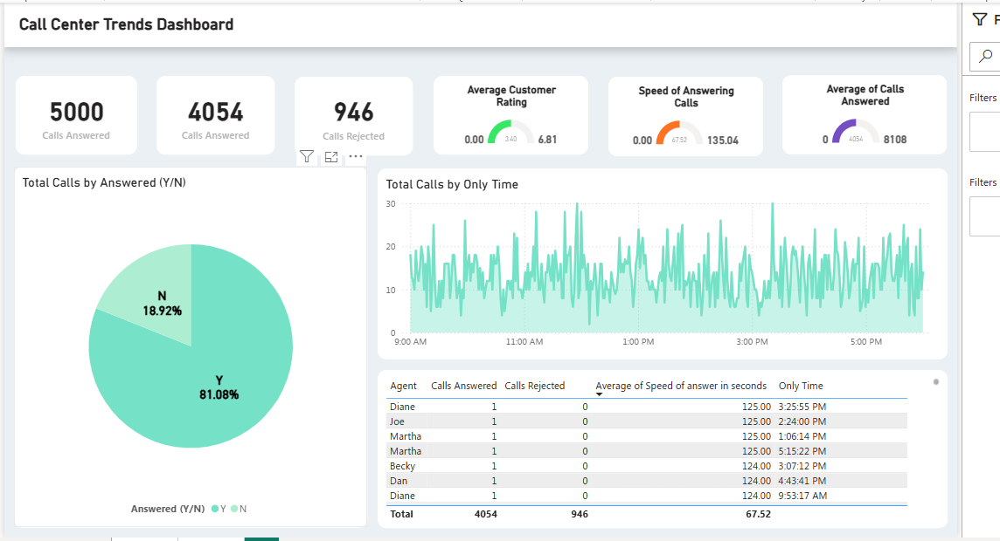
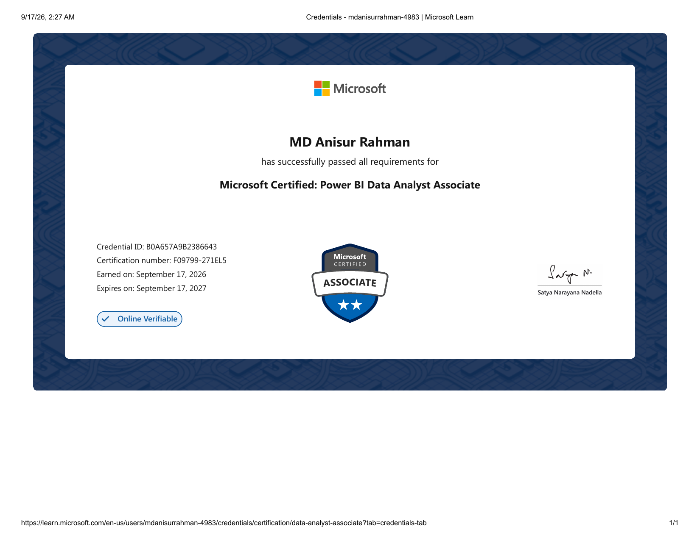
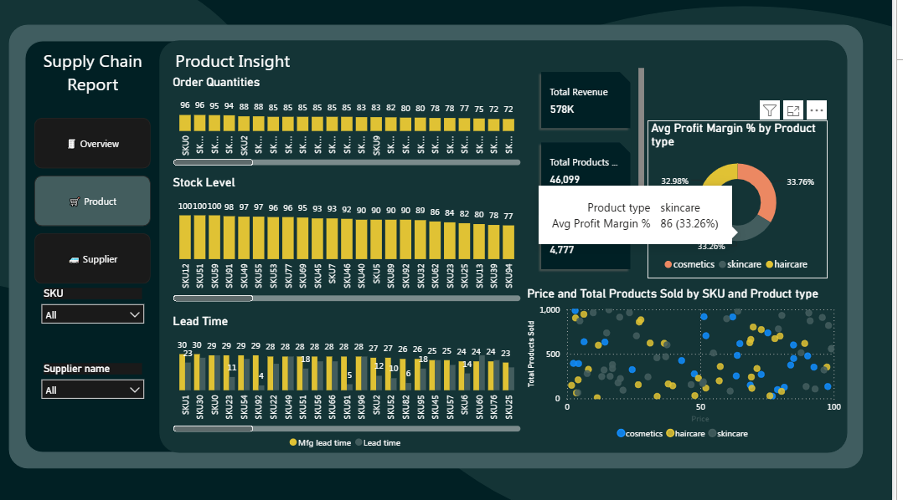
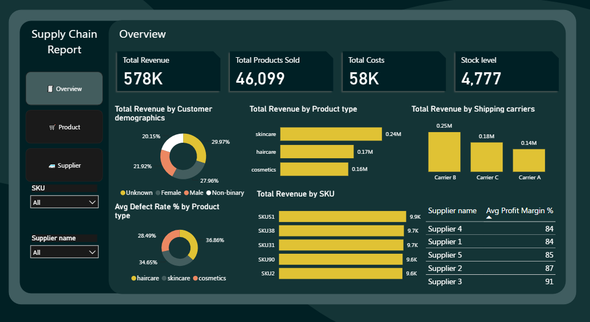
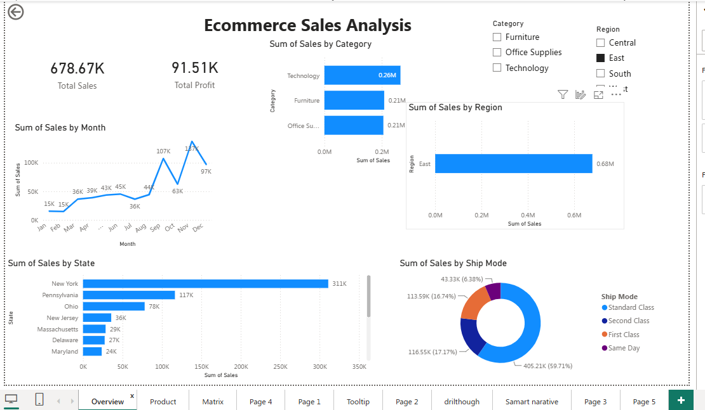
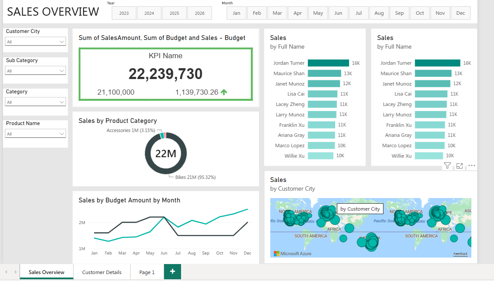
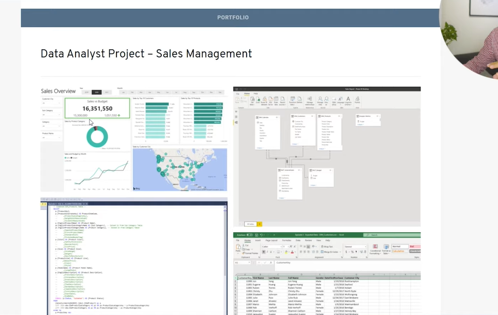

POWER BI
Call Center Trends Dashboard
Customer service dashboard tracking calls answered, rejected, ratings and answering speed.
Power BI • KPI Analysis • VisualizationMICROSOFT CERTIFIED DATA ANALYST
|
Hi, I'm MD Anisur Rahman. I help clients turn messy data into insightful dashboards, clean analytical datasets and decision-ready reports using Power BI, SQL, Excel and Python.
ABOUT ME
I am a Microsoft Certified Data Analyst focused on transforming raw data into meaningful insights. My workflow covers data cleaning, modeling, analysis, visualization and clear communication of findings.
I create professional Power BI dashboards, write SQL queries, analyze data in Excel and use Python libraries such as Pandas, Matplotlib and Seaborn for deeper analysis and visualization.
This paragraph is demo copy. Replace it with your work experience, industry knowledge and career story.
MICROSOFT CERTIFICATION
Professional certification validating my skills in preparing, modeling, visualizing and analyzing data with Microsoft Power BI.

VERIFIED CREDENTIAL
Issued to MD Anisur Rahman by Microsoft.
View CertificateTECH STACK
Practical skills for cleaning, modeling, analyzing and communicating business data.
Dashboards, DAX, Power Query, data modeling and KPI reporting.
Joins, CTEs, aggregations, cleaning and analytical queries.
Formulas, PivotTables, Power Query and business reporting.
Pandas, Matplotlib and Seaborn for analysis and visualization.
Skill percentages are demo content and can be adjusted to your preferred values.
SELECTED WORK
Explore selected analytics projects and open each case study to see the business requirement, project approach, final output, insights, recommendations and business impact.

Customer service dashboard tracking calls answered, rejected, ratings and answering speed.
Power BI • KPI Analysis • Visualization
Product-level view of order quantities, stock, lead time, margins and pricing.
Power BI • Supply Chain • Product Analytics
Executive overview covering revenue, costs, stock, demographics, SKUs and suppliers.
Power BI • Executive Dashboard • KPIs
Sales and profit analysis by month, category, region, state and shipping mode.
Power BI • Sales Analytics • Drill-down
Budget vs sales KPIs with product, customer, monthly trend and geographic analysis.
Power BI • Sales • Budget Analysis
End-to-end workflow featuring dashboard design, data model, SQL transformation and Excel data.
SQL • Excel • Power BI • Data ModelingSERVICES
Clean, interactive dashboards designed around your business KPIs.
Transform messy Excel, CSV or database data into analysis-ready datasets.
Queries and analysis that turn database records into useful answers.
Exploratory analysis, reporting, charts and repeatable analytical workflows.
MY PROCESS
Clarify your question, KPI and expected output.
Clean, validate and structure the data.
Find patterns, trends and actionable insights.
Present a polished dashboard or report with clear findings.
LET'S WORK TOGETHER
Tell me what you need and I’ll get back to you. For Upwork clients, you can also use the social/profile buttons below.
Replace the demo social links with your actual profile URLs.